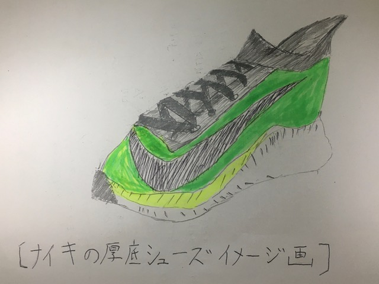

箱根駅伝や東京マラソンで多くの選手がなぜピンクや緑色の厚底シューズを履いていたのか調査する。
www(1)によれば
"近年、厚底シューズを使用した設楽悠大、大迫傑、二人の選手がマラソンで日本新記録を出しました。
また、今年2020年の箱根駅伝は高速レースで区間新記録も多く出ました。"(1)
このことと厚底シューズに深い関わりがあるのではないかと思い調査してみることにしました。
シューズには主に厚底シューズと薄底シューズに分かれます。
厚底シューズと薄底シューズでは大きな違いがあり、www(1)によれば
"もともと厚底シューズはクッション性が高く足の負担が軽いという長所があるが、底が厚いため重くなりスピードレースには不向きである。"(1)とあり、
一方薄底シューズはhas(2)によれば
"厚底シューズより軽く、地面を蹴る感覚がダイレクトに伝わり足に力が伝わりやすい"(2)とあり、
レースでは薄底シューズが使用されるのは明白である。
だがその定説が破られました。NIKEの厚底シューズの登場により。
www(1)によれば、
"靴底に特殊な素材を使って厚くても軽さを実現し、さらにカーボンファイバー製のプレートを挟み込みました。このプレートは反発性が高く、推進力を生み出す。
また足の負担が減る"(1)とあり、
世界中のランナーはかなり興味を持ったはずです。
この厚底シューズがレースで使われ始めたのは2017年のことです。www(1)によれば
"NIKE厚底シューズの初期モデルを使い人類には不可能と思われてきたマラソンの[2時間の壁]にリオオリンピック男子マラソン金メダリストのキプチョゲが2時間0分25秒で世界記録を
大幅に更新し、2019年には1時間59分40秒で2時間を突破した。"(1)とあり、
ランナー誰もがこのシューズを履き自己ベストを更新したいと思ったことでしょう。
この厚底シューズの登場により薄底シューズの時代から厚底シューズの時代にかわりました。よって箱根駅伝やマラソンでなぜ選手の多くが厚底シューズを使用するかは、
足底のプレートが持つ推進力と足への負担軽減が長い距離を走ることに有利に働くからだと推測できる。
いまだ厚底シューズ=NIKEですがほかのランニングシューズメーカーもNIKEに開発競争に負けじと開発を始めていると考えられる。